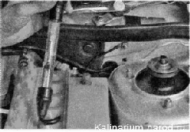

Аккумулятор - снятие иустановкаСнятие 1. Подготавливаем автомобиль к выполнению работы и отсоединяем клемму провода от отрицательного вывода аккумуляторной батареи . Аналогично отсоединяем клемму провода от положительного вывода аккумуляторной батареи. 2. Торцовым или накидным ключом на 13 мм отворачиваем гайки крепления аккумуляторной батареи и снимаем прижимную планку с двумя стяжками. 3. Снимаем аккумуляторную батарею с автомобиля. Установка Устанавливаем аккумуляторную батарею в обратной последовательности. Выводы аккумуляторной батареи выполнены разными, диаметр положительного вывода больше. Нарушение полярности при подсоединении аккумуляторной батареи приведет к выходу из строя электронно го оборудования автомобиля. АККУМУЛЯТОР - ОБСЛУЖИВАНИЕ В продаже имеются аккумуляторные батареи необслуживаемого типа с герметичным корпусом. Такие батареи не имеют отверстий для доливки воды и проверки плотности электролита. Для выполнения работы потребуются: — мелкозернистая наждачная бумага; — вольтметр; — ареометр; — зарядное устройство.
Обслуживая аккумуляторную батарею, необходимо соблюдать правила техники безопасности и работать в резиновых перчатках. Регулярный уход за батареей 1. Подготавливаем автомобиль к выполнению работы. 2. Протираем корпус аккумуляторной батареи тканью, смоченной 10 % раствором питьевой соды или нашатырного спирта, а затем чистой водой. 3. Проверяем надежность закрепления батареи на автомобиле. 4. Проверяем состояние выводов аккумуляторной батареи и клемм силовых проводов. Если клеммы покрыты слоем окислов, снимаем клеммы с выводов аккумуляторной батареи. Наждачной бумагой зачищаем выводы аккумуляторной батареи и клеммы проводов до блеска. 5. Проверяем уровень электролита в каждом аккумуляторе, для этого на корпусе батареи нанесены метки MIN и МАХ. Если уровень ниже нормы, ареометром (или медицинским шприцем) доливаем в аккумуляторы дистиллированную воду. На аккумуляторной батарее, находящейся несколько лет в эксплуатации, уровень электролита плохо виден через стенку корпуса. В этом случае проверить уровень можно через заливные отверстия аккумуляторов. Электролит должен полностью покрывать сепараторы аккумуляторов и немного не доходить до нижних кромок колодцев заливных отверстий.
Проверка и зарядка 1. Снимаем аккумуляторную батарею с автомобиля или отсоединяем клеммы проводов от выводов батареи и снимаем прижимную планку (см. выше). 2. Выворачиваем пробки аккумуляторов (это удобно делать монетой). 3. Грушей ареометра отбираем часть электролита в колбу прибора и, не вынимая носик колбы из заливного отверстия аккумулятора, по поплавкам определяем плотность электролита в каждом аккумуляторе. Па каждом поплавке написана минимальная плотность, при которой он всплывает. После доливки дистиллированной воды, пока раствор в аккумуляторе полностью не перемешается, показания ареометра будут неверны. В ареометре с одним поплавком плотность определяется по шкале, нанесенной на поплавок, и зависит от глубины его погружения. Плотность электролита в полностью заряженной батарее, должна быть близка к указанной в табл. 13.4.1. в соответствии с климатической зоной эксплуатации автомобиля. Снимая показания ареометра, необходимо учитывать температурную поправку. При уменьшении температуры электролита на один градус емкость аккумуляторной батареи уменьшается на 1—2 %. При отсутствии ареометра степень заряженности аккумуляторной батареи можно проверить вольтметром, измеряя напряжение на выводах батареи. Сравнив полученный результат со значениями указанными в таблице, определите зараженность батареи.
Аккумуляторную батарею, разряженную на 50 % и более, необходимо зарядить. 4. Подсоединяем зарядное устройство к выводам аккумуляторной батареи, соблюдая полярность, и только после этого включаем зарядное устройство в электросеть. Зарядный ток не должен превышать 10 % емкости аккумуляторной батареи в амперах, то есть максимальная сила тока заряда — 5,5 А. 5. Заряжаем аккумуляторную батарею. Процесс контролируем, измеряя плотность электролита. Время зарядки полностью разряженной батареи не менее десяти часов при зарядном токе 5,5 А. 6. Прекращаем заряжать батарею после того, как во всех ее аккумуляторах начнется обильное выделение газа; сначала отключаем зарядное устройство от электросети, и только после этого отсоединяем провода от выводов аккумуляторной батареи. 7. Заворачиваем пробки на место. 8. Надеваем клеммы силовых проводов на выводы аккумуляторной батареи. Накидным ключом на 10 мм затягиваем болты крепления клемм и наносим на клеммы и выводы батареи тонкий защитный слой пластичной смазки. |
||||||||||||||||||||||||||||||||||||||||||